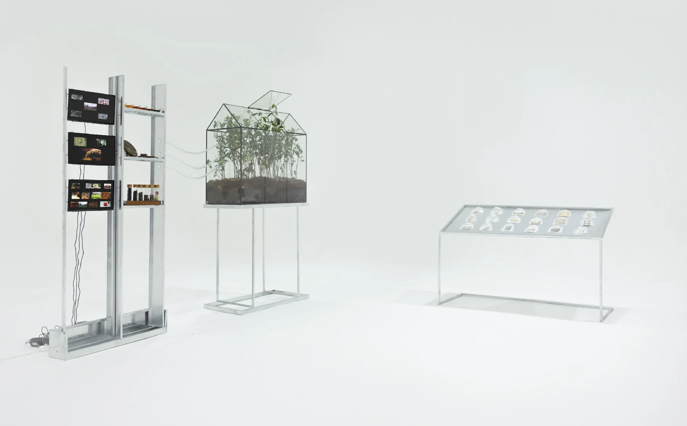

Tea Fragrance in the Air
红茶全球化的物质路径与文化想象

个人项目
档案研究、概念开发、影像叙事与装置呈现
9分27秒 · 多通道影像、植物与茶样
本项目采用视听、流动的方式，将红茶作为一个“超对象”，追溯其发展、转化和全球传播的过程。它从福建武夷山的当地茶叶品种开始，沿着海上贸易路线和帝国殖民路线，最终漂流到印度的锡兰。在蒸汽机的轰鸣声中，红茶变成了一种优雅的下午饮料。在经历了战争、政治动荡和科技革命之后，红茶在后殖民时代的背景下，在地方身份的重塑中，逐渐成为一个模糊的人物，注入了资产阶级的气质和神秘，同时兼具东方和西方。我将展览空间的影像档案、虚构叙事和植物标本分层。从茶叶的微观角度出发，我分析了红茶在全球背景下如何在日常生活、遥远的想象、技术变革和工业革命中不均衡地发展。
红茶全球化的物质路径与文化想象
这个多媒体装置结合了视频、茶树展示和图像展台，探索红茶的生长过程，通过全球化成为跨文化的“超级对象”。通过茶的故事，它揭示了文化和历史的融合，塑造了全球贸易、殖民历史和现代消费主义。
从东到西
在唐宋时期，僧侣们发现了茶的药用价值，可能是受蛇用茶叶缓解消化不良的启发。随着佛教和道教的兴盛，茶开始被视为既能修身又能治病的圣物。在一个民间故事中，一个和尚通过煮茶汤治愈了一位皇后，提升了茶作为万灵药的地位。在皇权至上的等级社会中，茶成为治愈和国家稳定的象征，地位逐渐上升。从东到西到福建到印度再到英国茶叶在中国的发展始于江西后来随着移民来到武夷山，这导致了当地茶叶品种的种植和固定的生产方法。然而，由于中国小农经济的自给自足性质，茶叶生产以家庭为基础，缺乏系统化和统一性，每个家庭形成自己独特的生产方法，这些方法大多是口头传授的，增加了神秘感。闽南由于临海的地理优势，已成为重要的茶叶贸易枢纽。
殖民历史与文化想象
鸦片战争后，殖民入侵破坏了中国传统的茶业。港口的开放、英国人的土地掠夺以及对生产过剩的控制导致了中国红茶技术的流失和价格的暴跌，破坏当地生产。随后，英国确立了自己作为茶文化中心的地位，而中国红茶则逐渐成为传奇。茶在工业革命和殖民扩张中发挥了关键作用。在18世纪的英国，在城市化、污染和疾病的影响下，煤炭成为工人阶级的廉价能源。英国人在阿萨姆邦和大吉岭等殖民地建立了茶园，以减少对中国茶叶的依赖，重塑了全球茶叶贸易。19世纪，英国园艺师罗伯特·福根（Robert Fogun）从中国窃取茶叶种子，帮助建立了殖民地的茶业，推动了英国的经济增长，但破坏了中国的茶传统。中国红茶从未形成一种统一的文化，而是通过殖民时代的东方主义刻板印象而被浪漫化，通常被视为一种神秘的象征，而不是与特定地区联系在一起的产品。
点击加载视频 · 如无法播放，可使用上方链接
NEXT PROJECT